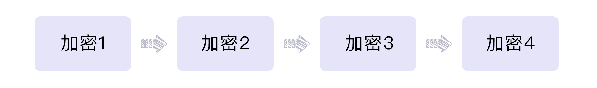
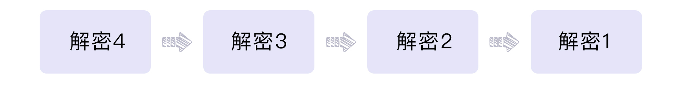

- 00 开篇词 如何突破“爬虫反爬虫”内卷之怪现状？.md.html
- 01 爬虫需求的诞生：我们是正经的软件工程师.md.html
- 02 爬虫的内卷和黑化：我们变得不正经啦.md.html
- 03 反爬虫的发展以及展望：我们也不是什么正经工程师.md.html
- 04 爬虫的首轮攻势：如何低调地拿到自己想要的数据？.md.html
- 05 反爬虫的应对之策：通用且基本的检测规则是什么？.md.html
- 06 爬虫攻势升级：分布式的意义在哪里？.md.html
- 07 反爬虫升级：如何判定你是个真人？.md.html
- 08 博弈的均衡：如何对抗道德的沦丧和人性的扭曲？.md.html
- 09 反爬虫概述（一）：高收益的后端能做哪些基本的事情？.md.html
- 10 反爬虫概述（二）：无收益的前端是怎么进行key处理的呢？.md.html
- 11 反爬虫概述（三）：前端反爬虫是怎么做信息收集的？.md.html
- 12 反爬虫概述（四）：前后端都不合适的时候如何进行处理？.md.html
- 13 反爬虫基础理论：这是唯一一节严肃的纯理论课.md.html
- 14 低耦合：如何快速下线反爬虫系统？.md.html
- 15 规则引擎：如何快速响应突发的爬虫需求？.md.html
- 16 验证爬虫：我到底要不要百分百投入？.md.html
- 17 招聘篇：如何写一个合适的JD？.md.html
- 18 如何搞定老板（上）：如何编造虚无缥缈的OKR？.md.html
- 19 如何搞定老板（中）：如何组建团队.md.html
- 20 如何搞定老板（下）：团队考核怎么做？.md.html
- 加餐 反爬虫的专家级鉴别力：用户习惯检测.md.html
- 春节加餐01 破解还是不破解，这是一个问题.md.html
- 春节加餐02 真实世界里，小心屠龙勇士变恶龙.md.html
- 春节加餐03 低调驶得万年船.md.html
- 答疑课堂 爬虫反爬虫调试对抗技巧以及虚拟机详解.md.html
- 结束语 达到理想不太易.md.html
- 捐赠
10 反爬虫概述（二）：无收益的前端是怎么进行key处理的呢？
你好，我是DS Hunter。
上一讲，我们提到了高收益的后端为了保护自己，进行了大量的反爬支持。但是反爬的主战场，依然是前端。
众所周知，做反爬，对于前端来说是没什么收益的，因此动力会差很多。如何解决动力问题，我们会在进阶篇深入探讨。我们目前亟待明确的，是前端在帮助后端进行反爬的时候，具体能够做些什么。
在反爬虫工作里，前端主要的作用是key加密。除此之外，还有一些杂活，比如收集信息、埋点统计等等。最后我们会把这一切聚集到规则引擎中统一收口。今天我们就先来探讨前端反爬虫的主力部分——key的加密。至于其它的辅助以及收尾工作，我会在下节课跟你一起探讨。
在09讲中，我们已经明确过了，服务端的key是加密后下发的。那么客户端必然需要解密方法。不过，解密方法的基础框架是什么呢？除此之外，基础框架内有什么可以用到的代码保护方式呢？我们先从第一个问题开始分析。
放置方式：成对加解密
这里特意发明了一个新词，叫成对加解密，和“对称加解密”这种加密方式不是一件事。我们所熟知的对称加解密是一个加解密的方式，或者说过程，而成对加解密是一个存储方式。
加密这件事在服务端，也就是后端已经直接执行掉了，而解密操作是发到客户端让客户端去做的。通常来说，解密操作是如何进行的呢？
举个例子，服务端生成的key是10。那么如果我们进行如下一些简单的加密措施：
那么对应的解密方法自然就是所有操作的逆运算：
这样就可以得到原始的key了，是10。当然，这里的四则运算只是demo，我想聪明的你不至于学完了就真的在生产用加减乘除吧……不过，不论你用的是什么方法，在整个的运算中，我们的主要要求都是可逆和不丢精度这两点。
因此，我们在服务端生成key的时候，就需要同时确定加密解密的链路顺序，这样才能保证客户端按照顺序解密后得到正确的结果。
如图：

那么对应的解密流程就是：

为了方便客户端的解密，我们可以在服务端把加密方法和解密方法成对存储，“加密1”对应“解密1”，“加密2”对应“解密2”，以此类推。这就是成对加解密的核心了。而前端的解密方法，也是由服务端这样推送下来的。
解密方法从服务端推送下来之后，就意味着所有的题目也已经出完了。我们假设，现在你的服务端一共存储了100对加解密方法。你可以随机取出n对并通过洗牌算法确定一个随机的顺序，通过这个随机顺序生成的加密方法来对key进行加密。这样每个爬虫在破解的时候，就需要逆序阅读对应的解密方法，相当于面对了不同的代码。整个过程类似于题库抽题的原理，爬虫方无论破解多久，也不敢保证自己爆破了题库。所以就算爬虫方的代码上线了，他的心里也还是没底的。
是的，这很像开盲盒对不对？那么盲盒套路我们都知道，是存在限量款的。所以，你完全可以给个隐藏款，爆率极低，调试的时候很难撞到，但是竞对的生产在爬取的时候，一旦量变大了，就会撞上对不对？
盲盒的事情就先说到这里，我们回到客户端的解密上。服务端roll到了一堆的加密方法并且按顺序加密了，那么客户端就应该倒叙进行解密。是的，这是一个栈。在12讲我们会单独讲如何生成这段js代码。而客户端执行了对应的js，就可以把解密后的key拿到了。
当然，这样的破解难度对于竞对来说是很低的。这里虽然有一定的随机性，但是还不够。成对加解密是隐藏一切的基石。因此，我们后面会增加一些浏览器端的代码保护方式，提升破解难度。
代码保护方式：变量名混淆、eval和虚拟机
这里我为你提供了三种代码保护方式，按照复杂度排序，越往后越复杂。但是在使用的时候，我们全部都会用到。
变量名混淆
变量名混淆是最低一层的加密，也是必备的加密。
我们通常会使用一些js的minifier工具来进行变量名加密，但是，实际上这个并不算加密，因为从名字来看，minifier是minify加er的变形，也就是说它本质上是在做minify——缩短变量名长度。诚然，缩短变量名也会导致调试体验差，但是这对于爬虫来说是远远不够的。
想象一下：我们工作中，最可怕的，是变量名短吗？其实并不是，很多人编码习惯不好，变量名都是abcd之类的，我们日常生活中不也调试得不亦乐乎吗？这对爬虫根本也不是事。
那么我们最怕的是什么呢？其实最怕的反倒是视觉上容易混淆，比如变量名过长，又很近似。举个例子，下面有两个变量名：
你能一眼就看出来这不是一个变量名吗？ 这个难度就比单纯的短变量名难度大多了。
因此，我们的变量名要进行混淆，降低可读性。
在早年，这个操作只能通过模版替换的方式来做，例如将js写到模版中，我们在12讲中说到engine混淆的时候会详细介绍。随着AST技术的发展，这个操作慢慢变得容易了，而且定制化也更强了，感兴趣的话也可以查一下webpack的AST技术。当然，模版还是不可替代的，因为模版无需解析语法树，因此效率非常高。
最后，你一定会问：如果我是爬虫方，面对变量名加密我怎么办？
答案其实很简单，我们刚刚是不是提到了js的minifer工具缩短的变量名反倒可读性高了一些？是的，你可以在拉取到js之后，自己minify一次，虽然这样比源码可读性降低了很多，但是比起混淆后的变量名，可读性反倒高了不少。这也算是稍稍扳回一城了。
eval
eval是js最臭名昭著的功能，所以对于反爬虫来说几乎是必备的。即使有些使用了虚拟机，也会使用eval来运行虚拟机。
eval的问题在于，它会将字符串进行处理，然后送入eval执行。那么无论是阅读还是调试体验都很糟糕。所以我们在engine里面会大量使用eval。那么针对这两点，爬虫的对策是什么？怎么才能反制爬虫的对策呢？
第一，阅读。eval难以阅读主要是因为不能找到实际执行的代码。但是如果爬虫方换个思路，这个问题就好解决了。我们看下面的例子：
eval = console.log
eval('1+1');
你可以找个console运行一下试试。是不是输出了1+1？这样，代码就可读了。不过又出现了代码本身不会运行的问题。这个问题，对爬虫方来说并不是一件难事：备份eval，调用console.log，然后运行备份的eval就可以了，js基本操作。
这样，所有的方法都会运行前先输出，就可以拿到可阅读的代码了。
之后，就到了反爬虫方再次反针对的环节了。反爬虫方可以判定eval的toString，或者重写console.log，调用一个无害的eval，触发无限递归，而爬虫方则相应的需要重写eval的toString，以及安全处理递归结束条件。再接下来，反爬方可以再重写Function的toString方法来进行检测，或者直接备份eval的symbol，等等。
这里的攻防方式就不一一细说了，比拼的就是谁js能力更强。
第二，调试体验。
eval一个很大的黑点就是不方便调试，因为他是一行，不是多行，没法打断点进去。这一点爬虫方可能怎么处理呢？
其实还是一样的办法。我们都知道，Chrome的调试工具碰到debugger会自动断下来。我们刚刚注入了eval，实现了先console再eval。那么，其实爬虫方还可以再进一步，在拿到字符串之后，在字符串的前面拼一个debugger进去，再送进eval。这样，eval的代码会首先被中断。爬虫方也就实现了对eval做调试。这个就是爬虫方针对eval做调试的一个小技巧。
那么，我们作为反爬虫方是不是束手无策了呢？毕竟看起来这个是无解的，没办法阻止他注入进去啊。是的，在没有办法阻止的情况下，我们的选择就是：让他注入进去，然后在后面坑他。
最普遍的一个做法就是让eval里面的代码大量检测运行时间。单步调试的代码与直接运行的代码，最大的不同就是运行时间不同。做了这个检测之后，爬虫方就会发现很多代码可能越调试越不对劲。因为，反爬虫方可能已经把运行时间这个条件放到key解密里面了。
举个例子，key的某一位可以用一个固定的整数除以运行时间并取整，这样相当于判定运行时间的阈值，然后用数学方法展开一下，不要直接取时间，而是把一堆时间作为参数传入进去，最终的数学化简形式是卡时间阈值即可。我们在中学学过很多多项式化简的办法，这里作为反爬方，你只要反过来操作，变成“化繁”即可。
虚拟机
虚拟机和eval的思路是一样的。与eval不同的是，虚拟机技术能够有效避免代码被直接截取，并且可以自定义指令集，而指令集本身的名称又是可以被混淆的。
所谓的虚拟机，指的就是使用js实现解释器的功能，来解释服务端下发的代码。所以有些地方也会叫解释器，在反爬虫领域这指的是一个东西。
常用的解释器有两种，一种是类Lisp解释器，一种是类汇编解释器。当然，两者各有优缺点，你可以根据情况任意选择。
Lisp解释器的优点是服务端编译的时候速度很快，因为Lisp代码直接可以转成语法树。而缺点是编写很难，对方首次阅读可能会迷惑，而一旦理解，后续的破解难度就大大降低了。自己的编写时间和对方的破解时间相比，耗费太多了。
至于类汇编解释器，编写很简单，你可以使用类C语言来进行编写，然后服务端进行一次编译即可。缺点是编译本身耗时比较严重，并且还要写一个复杂的编译器。优点就是可读性大大降低，对爬虫方的困扰最大。
也许你会问：我不可以直接上WebAssembly这种简单又快速的方式吗？
答案是，可以，但是很难。原因之一是，WebAssembly过于标准，已经开始有一些逆向工具了。原因之二是，WebAssembly的兼容性还不是很好。所以也许未来会用的上，但截止到现在还不是一个最优选择。
实现方式：自定义Node.js的engine
说实话，为了迷惑爬虫方，上面所有的操作都很混乱。
虽然我们说，混乱对于反爬虫不是件坏事。但是，过度混乱也会导致调试体验的缺失。因此，我们需要服务端针对爬虫和规则，使用两套不同的阅读方式，服务端看到的应该是清晰明了的代码，而客户端看到的应该是混淆后的代码。这就是自定义engine要做的事情。
但是或许你意识到了一点：似乎这种事情后端做不了或者代价太大，前端因为暴露给客户又不适合做。那么这部分灰色地带怎么办呢。
是的，一切没人做的事情都会沦落倒让BFF去处理，在12讲我们讲BFF的时候会着重讲Node.js的engine的具体实现方式。这里，我们就先提一下这么做的必要性。
小结
这一讲，我们主要说的是前端反爬虫动作中的key加密部分。
首先，放置方式上，推荐你使用成对加解密的方式，这会提升系统随机性，为爬虫方解密增加一定的难度。
而代码保护的部分，我给你提供了三种方式，分别是变量名混淆、eval和虚拟机。
变量名混淆，主要是让你变成一个脸盲，也就是降低了代码可读性；而eval和虚拟机则是用于把代码搅浑，非常像炉石里的卡牌“尤格-萨隆”，在调试上让人获得困惑而又意想不到的体验。当然，这部分的保护有的时候也会让你觉得混乱。那么为了避免在迷惑爬虫方的时候把自己搞晕了，最后我也给你提到了自定义Node.js的engine这个实现方式的必要性。之后我们也会在12讲中进行详细的讲解。
这里我要强调的是，key加密本身是为了增加调试复杂度，而不是为了让对方找不到key，不要小瞧自己的对手，以为对方连找都找不到。另一方面，你也不用过于高估对手，他们也只是普通的人类，并非无所不能的超人，千万不要妄自菲薄。
至此，反爬虫最大的核心：key加密相关，就告一段落了。但是为了让系统更加完善稳定，我们依然需要一些非关键模块来辅助。在下一讲里，我们会详细介绍这些看起来对拦截爬虫没有太大贡献，但是又必不可少的部分。
此外，虽然成对加解密提供了一个不错的框架，但是还需要实际的内容来增强加密效果，一些隐藏的检测套路也是必要的。针对key加密的这些具体实现套路，我们还会在下一讲后面的加餐中详细解读，你也可以期待一下。
思考题
好了，又到了愉快的思考题时间。还是三选一的老规矩，你可以任选一个问题在留言区和我一起讨论。
- 所有的加解密都是执行js，那么如果对方使用浏览器直接运行js，是否意味着所有的加解密都形同虚设？ 如果不是，那原因是什么？
- 成对加解密本身就存在拦截概率了，因为对方可能匹配到熟悉的题目，也可能匹配不到。那么，我们如果有意放过爬虫，要计算条件概率吗？ 如何计算呢？
- 成对加解密roll出来之后要做一次洗牌，如果不做会有什么问题吗？
期待你在评论区的分享，我会及时回复你。反爬无定式，我们一起探索。
© 2019 - 2023 Liangliang Lee. Powered by gin and hexo-theme-book.